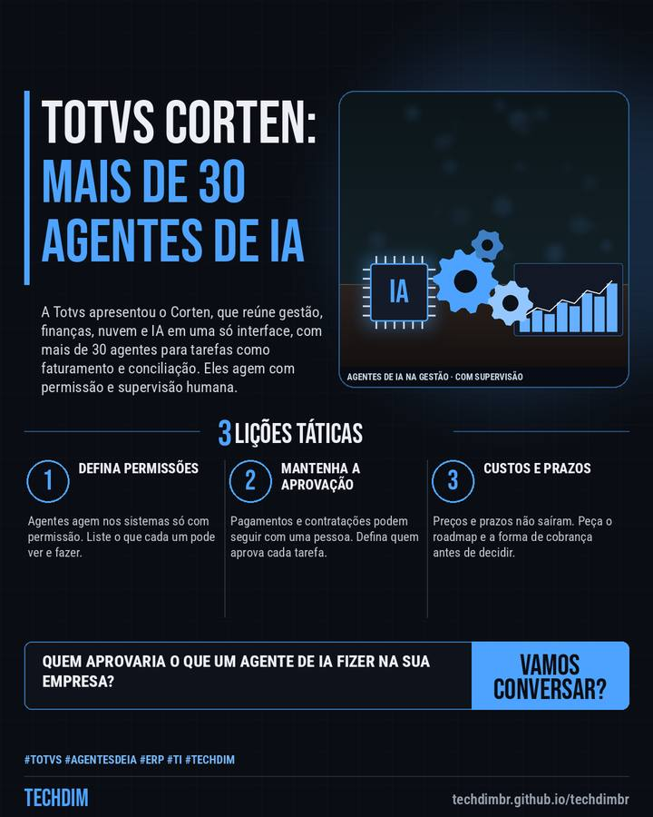

Notícia de tecnologia
Totvs apresenta o Corten: gestão com mais de 30 agentes de IA e supervisão humana
A Totvs apresentou o Corten, que reúne gestão, finanças, nuvem e IA em uma só interface, com mais de 30 agentes para tarefas como faturamento e conciliação. Eles agem com permissão e supervisão humana.

Em resumo
- Na terça (13/10), a Totvs apresentou o Corten, um “sistema operacional de gestão” que reúne backoffice, clientes, serviços financeiros, nuvem e IA em uma só interface
- São mais de 30 agentes de IA, criados sobre o Lynn, para tarefas como faturamento e conciliação. Agem nos sistemas com permissão e há supervisão humana quando necessário
- Preços e prazos não foram detalhados: cada produto segue seu roadmap. O Totvs Pay, de pagamentos, chega em dezembro para educação e construção civil, segundo o Baguete
Usa ERP e quer agentes de IA? Pergunte quais tarefas o agente faz e quem aprova pagamentos.
Por que importa
Fornecedora de ERP com mais de 70 mil clientes leva agentes de IA para dentro da gestão, e vale entender permissões, aprovação humana, custos e prazos antes de adotar.
O que fazer na prática
- Defina permissões. Agentes agem nos sistemas só com permissão. Liste o que cada um pode ver e fazer.
- Mantenha a aprovação. Pagamentos e contratações podem seguir com uma pessoa. Defina quem aprova cada tarefa.
- Custos e prazos. Preços e prazos não saíram. Peça o roadmap e a forma de cobrança antes de decidir.
Fontes consultadas
Mais do Radar de hoje
- Alerta de segurança Windows Shell CVE-2026-96951: falha explorada burla o aviso de arquivos da internet
- Dica prática Encaminhamento automático de e-mail: como bloquear no Google Workspace e no Microsoft 365
- Serviço TECHDIM Migração de servidor: planeje a troca antes que o suporte do Windows Server 2016 acabe
Leia também
Este texto resume as fontes citadas na data de publicação. Confira sempre o aviso oficial do fabricante antes de agir em produção.